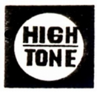
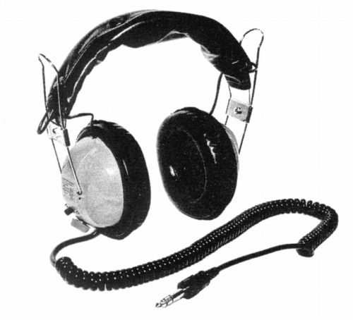
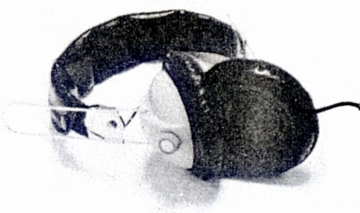
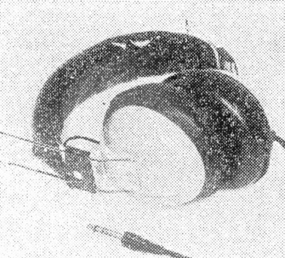
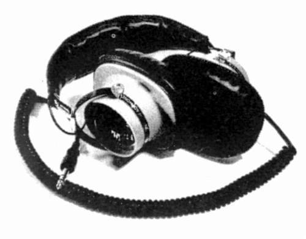

HIGHTONE（ハイトーン）
千代田区外神田に本社を置いていたメーカー？1971年の「テープ・サウンド」誌のヘッドフォンリストに登場。その他に1971〜73年頃の「無線と実験」誌に広告が掲載されていた。使用ユニットの口径の表記がインチ単位であり、輸出等をメインとしていたブランドだったのかもしれない。
MARK�Uデラックス


■価格 3,200円
■型式 ダイナミック型
■振動板 コーン型（3インチ径）
■インピーダンス 8Ω
■再生周波数帯域 25-18,000Hz
■許容入力 500mW
■感度
105dB
■コード 3mカールコード
■重量 360g
■発売 1971年頃
■販売終了
■備考 ステレオ/モノラル切替付き
MARK�U

■価格 2,800円
■型式 ダイナミック型
■振動板 コーン型（2.5インチ径）
■インピーダンス 8Ω
■再生周波数帯域 30-17,000Hz
■許容入力 500mW
■感度
100dB
■コード 3mカール
■重量 360g
■発売 1971年頃
■販売終了
■備考
当時の広告によれば、MARK�Uシリーズには他に、「Ｓ(2,500円)」「カスタム(2,800円)」「モノラル(2,500円)」があったようだ。
JUMBO-ONE

■価格 6,800円
■型式 ダイナミック型
■振動板 コーン型（3.3インチ径ペーパーコーン）
■インピーダンス 8Ω
■再生周波数帯域 20-20,000Hz
■許容入力 1000mW
■感度
■コードカール
■重量 470g
■発売 1973年頃
■販売終了
■備考